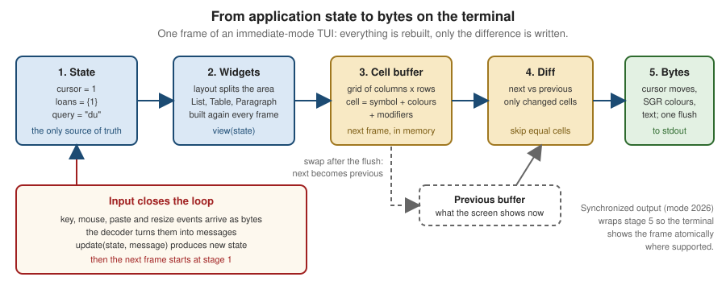

TUI Architecture & Concepts
|
This content was generated with the assistance of AI and should be verified against the official documentation before being relied on in production. |
A terminal user interface (TUI) takes over the terminal, draws a screen of widgets and reacts to key presses until the person quits. Libraries for it exist in every language, and they look very different on the surface: Ratatui is a Rust library whose application code draws every frame by hand, Bubble Tea is a Go framework built around a message loop, Textual is a Python framework with a CSS-styled widget tree, ncurses is a C library from 1993 that is still in daily use. Underneath they solve the same handful of problems, and learning those problems once makes every library easier to read, compare and debug. This page describes them: how a frame is produced, how input is decoded, how state is organised, how the terminal is entered and, above all, reliably left, and how to choose a library. The per-library pages that follow (Ratatui: Getting Started, Go TUIs with Bubble Tea, Python TUIs with Textual, Rich & prompt_toolkit, .NET TUIs with Spectre.Console & Terminal.Gui, C & C++ TUIs: ncurses, PDCurses & FTXUI and Other TUI Libraries: JVM, Kotlin, Node.js & Swift) apply these ideas to one stack each.
The page was written against these library versions, current in October 2026: Ratatui 0.30.2 (with crossterm 0.29.0), Bubble Tea v2.1.0, Textual 8.2.8, Terminal.Gui v2.5.0, Spectre.Console 0.57.2, ncurses 6.6, notcurses v3.0.17, FTXUI v7.0.3, Ink 8.0.0, Lanterna 3.1.5, Mosaic 0.18.0 and SwiftTUI 0.1.0. The terminal behaviour described is the one of current Linux and macOS terminal emulators and of Windows Terminal; the foundations are in Terminals, TTYs & Pseudo-Terminals and Escape Sequences & Terminal Capabilities, which this page links instead of repeating.
The running scenario is the Bookshelf tool. shelf tui is a full-screen catalogue browser: a list of books, a details pane, a
loans table and a search box. The complete example on this page is a small Node.js program with no dependencies, so that
every layer of a TUI stays visible in about 100 lines. It was run on Node.js 24 against a scripted input stream, and the byte
sequences it prints below are its real output. The Rust and Go snippets were not compiled while this page was written; they
follow the documentation of the libraries they link to.
Immediate mode and retained mode
The first design decision of any UI library is who remembers what is on the screen.
| Aspect | Immediate mode | Retained mode |
|---|---|---|
What the application does each frame |
Describes the whole screen again from its current state: "draw a list here, a block there". |
Builds a tree of widget objects once, then changes properties on those objects; the library redraws what changed. |
Who owns the UI state |
The application. Selected row, scroll offset and text in a field are fields in the application’s own state. |
Partly the widget tree. A text box remembers its text and cursor, a list its selected row. |
Typical code shape |
A |
A constructor that composes widgets, plus event handlers attached to them ( |
Strengths |
One place to read to learn what the screen shows. No stale widgets, no synchronisation between model and view. Easy to test: state in, buffer out. |
Less code for conventional forms, built-in focus and scrolling, styling by selector, reuse of components. |
Costs |
The application writes the plumbing for focus, scrolling and text editing, or pulls in helper crates. |
Two copies of the truth (model and widget tree) can drift; the widget life cycle (mount, update, remove) must be learned. |
Examples |
Ratatui, Bubble Tea (the |
Textual, Terminal.Gui, Lanterna’s GUI layer, Ink (React reconciles a component tree), Mosaic (Compose) |
Ratatui’s documentation states its model plainly: it uses immediate-mode rendering with intermediate buffers, so each frame
the application redraws every widget it wants visible. Bubble Tea sits in between: the application owns the model and the
View method turns the model into a string, which makes it immediate in spirit, while the library’s renderer decides what to
write. Retained toolkits such as Textual and Terminal.Gui keep a tree of live widgets, much like a desktop GUI toolkit.
"Immediate" describes the application’s code, not the bytes sent to the terminal. Every library discussed here diffs the new frame against the previous one before writing, so redrawing everything in memory does not mean rewriting everything on the wire. That is the subject of the rendering section below.
The main loop
Every TUI is the same three-step loop, whatever it is called in a given library:
-
Input. Block until something happens: a key press, a mouse event, a pasted text, a resize, a timer tick, a message from a background task.
-
Update. Change the application state according to that event.
-
Render. Turn the state into a frame and flush the difference to the terminal.
Two timing policies exist. In an event-driven loop the program sleeps until an event arrives and redraws only then; this is
the cheapest and what Bubble Tea, Textual and ncurses programs do. In a tick-driven loop the program also wakes at a fixed
rate (for example 30 times per second) to advance animations or poll background state, which is what a dashboard needs and what
Ratatui’s async recipes use. Ratatui’s Terminal::draw does not wait for events itself; the application’s loop decides when to
call it, and a resize does not trigger a redraw until the application draws again.
Decoding input
In raw mode the terminal sends the program bytes, not characters in lines. Everything above that is the library’s decoder.
| Input | What arrives on stdin | Decoding problems |
|---|---|---|
Printable key |
The UTF-8 bytes of the character. |
Layout-dependent: the program sees |
Ctrl and letter |
A control byte: Ctrl-C is 0x03, Ctrl-Z is 0x1A, Ctrl-I is the same byte as Tab (0x09), Ctrl-M the same as Enter. |
Some combinations cannot be told apart in the legacy encoding; Ctrl-C is no longer a signal in raw mode. |
Arrow, function and editing keys |
A CSI or SS3 sequence such as |
Tables differ per terminal; libraries use terminfo or built-in tables. |
Alt and letter |
ESC followed by the letter. |
A lone Esc key press is one byte, and the start of every sequence: the decoder must wait a short time to tell them apart. Slow links (ssh) make this timeout visible. |
Mouse |
Reports enabled by modes such as |
Must be switched on and off; position is in cells, not pixels. |
Pasted text |
Plain bytes, unless bracketed paste ( |
Without it, a pasted newline looks like pressing Enter, and pasted text can trigger key bindings. |
Resize |
No bytes: on Linux and macOS the process receives |
Must be turned into a message. |
Focus in and out |
|
Only when requested. |
The exact byte sequences, the modes and the terminal queries are documented in
Escape Sequences & Terminal Capabilities. Two points matter for
architecture. First, the legacy encoding cannot report key releases or most modifier combinations; the Kitty keyboard protocol
and the Windows console input records can, and libraries expose that as an event kind. crossterm’s Event type has Key,
Mouse, Paste, Resize, FocusGained and FocusLost variants, Paste is emitted only when bracketed paste is enabled,
and is_key_press is false for key release and repeat events. Second, on Windows the console reports both the press and the
release of a key, so a program that reacts to every key event handles each key twice unless it filters on the event kind;
Ratatui’s FAQ lists this as a known cause of duplicate key events. Match on the press kind on every platform and the same code
is correct everywhere.
Rendering: cell buffer, diff and flush
A terminal is a grid of cells. Each cell holds one grapheme (usually one character), a foreground and background colour and a set of attributes such as bold and underline. A TUI library models the grid in memory as a buffer and renders in four steps, shown in the figure:
-
The application’s view code draws widgets into the next buffer. The layout step has already split the screen area into rectangles.
-
The library compares the next buffer with the previous buffer, the one that describes what the terminal currently shows.
-
For every changed cell (or run of cells) it emits the cursor movement, the colour change and the text, skipping unchanged cells.
-
It writes everything in a single flush, and the next buffer becomes the previous one for the next frame. This is double buffering: two buffers, swapped after every frame.

Ratatui documents exactly this behaviour: Terminal::draw passes a Frame to a closure, and after the closure returns
Ratatui diffs the result against the previous frame and writes only the changes. The first frame has no previous buffer, so
every cell is written once, which is why a TUI’s first paint is the largest write.
Writing a frame as several small writes can show a half-drawn screen: the terminal may paint between two writes, which looks
like tearing or flicker. Terminals that implement synchronized output (private mode 2026, a community specification from the
Contour terminal’s vt-extensions repository, not an ECMA-48 or ISO standard) hold the display while the application writes
between ESC [ ? 2026 h and ESC [ ? 2026 l and show the frame atomically. Terminals that do not know the mode ignore it,
so wrapping every frame is harmless; whether a given terminal honours it is not guaranteed by any standard.
A complete minimal TUI
The program below contains every layer in one file: a pure update, a view that fills a cell buffer, a diff that turns two
buffers into cursor-move sequences, the alternate screen, synchronized output and a guaranteed restore. It has no
dependencies and runs on Node.js 22 or later; it uses only standard sequences, but it was run on macOS only, not on Linux or Windows. Keys: j and k move,
l toggles a loan, q or Ctrl-C quits.
// shelf-core.mjs: a minimal TUI core with no dependencies (Node.js 22+)
import process from 'node:process';
const ESC = '\x1b';
const books = ['Dune', 'Emma', 'Kim', 'Ulysses'];
// ---- Model, messages, update (pure) -------------------------------------
const initial = { cursor: 0, loans: new Set(), quit: false };
function update(model, msg) {
switch (msg.type) {
case 'key':
if (msg.key === 'q' || msg.key === '\x03') return { ...model, quit: true };
if (msg.key === 'j') return { ...model, cursor: Math.min(model.cursor + 1, books.length - 1) };
if (msg.key === 'k') return { ...model, cursor: Math.max(model.cursor - 1, 0) };
if (msg.key === 'l') {
const loans = new Set(model.loans);
loans.has(model.cursor) ? loans.delete(model.cursor) : loans.add(model.cursor);
return { ...model, loans };
}
return model;
default:
return model;
}
}
// ---- View: model -> cell buffer (rows of strings, one char per cell) -----
function view(model, width, height) {
const buf = Array.from({ length: height }, () => Array(width).fill(' '));
const put = (row, text) => [...text].slice(0, width).forEach((ch, i) => { buf[row][i] = ch; });
put(0, 'shelf tui j/k move, l loan, q quit');
books.forEach((title, i) => {
const mark = i === model.cursor ? '>' : ' ';
const loan = model.loans.has(i) ? '[on loan]' : '';
put(2 + i, `${mark} ${title.padEnd(10)} ${loan}`);
});
return buf;
}
// ---- Diff: previous buffer vs next buffer -> escape sequences -----------
function diff(prev, next) {
let out = '';
for (let y = 0; y < next.length; y++) {
for (let x = 0; x < next[y].length; x++) {
if (!prev || prev[y][x] !== next[y][x]) {
out += `${ESC}[${y + 1};${x + 1}H${next[y][x]}`; // CUP, then the character
}
}
}
return out;
}
// ---- Terminal lifecycle ---------------------------------------------------
const stdout = process.stdout;
const enter = `${ESC}[?1049h${ESC}[?25l`; // alternate screen, hide cursor
const leave = `${ESC}[?25h${ESC}[?1049l`; // show cursor, main screen
let restored = false;
function restore() {
if (restored) return;
restored = true;
if (process.stdin.isTTY) process.stdin.setRawMode(false);
stdout.write(leave);
}
export function run(input, width = 40, height = 8) {
let model = initial;
let prev = null;
stdout.write(enter);
process.on('exit', restore);
for (const sig of ['SIGINT', 'SIGTERM', 'SIGHUP']) process.on(sig, () => process.exit(130));
const frame = () => {
const next = view(model, width, height);
// Synchronized output (mode 2026): the terminal shows the frame atomically.
stdout.write(`${ESC}[?2026h${diff(prev, next)}${ESC}[?2026l`);
prev = next;
};
input.on('data', (chunk) => {
for (const key of chunk.toString()) {
model = update(model, { type: 'key', key });
if (model.quit) { restore(); input.pause(); return; }
}
frame();
});
frame();
}
if (import.meta.url === `file://${process.argv[1]}`) {
if (process.stdin.isTTY) process.stdin.setRawMode(true);
run(process.stdin);
}Source: Ratatui — Rendering under the hood (the model the program imitates); Node.js — tty and setRawMode
Driving that program with the keys j, l and q from a script and printing every write shows the diff at work (long
lines shortened):
0 "\u001b[?1049h\u001b[?25l" enter: alternate screen, hide cursor
1 "\u001b[?2026h\u001b[1;1Hs\u001b[1;2Hh ... \u001b[?2026l" first frame: 2504 bytes, every cell
2 "\u001b[?2026h\u001b[3;1H \u001b[4;1H>\u001b[?2026l" after j: two cells (30 bytes)
3 "\u001b[?2026h\u001b[4;14H[\u001b[4;15Ho ... \u001b[?2026l" after l: the nine cells of [on loan]
4 "\u001b[?25h\u001b[?1049l" leave: show cursor, main screenThe program writes one cursor-position sequence per changed cell, which is the simplest correct diff. Production libraries merge neighbouring changes into runs, skip cursor moves when the cursor is already in place, and emit colour changes only when the style changes. The program does not handle wide characters or combining marks (a cell is one JavaScript character), which is the topic of the next section’s pitfalls.
Layout systems
Layout answers "which rectangle does this widget draw into". Four families are in use.
| Family | How it works | Libraries |
|---|---|---|
Constraint solving |
A container is split along one axis by a list of constraints (fixed length, percentage, ratio, minimum, maximum, fill the rest). A solver finds sizes that satisfy them and returns rectangles. |
Ratatui ( |
Box model, flexbox |
Every element is a flex container with direction, grow, shrink, padding and gaps. |
Ink (Yoga flexbox: every element behaves like a |
CSS |
A stylesheet with selectors, docking, grid and units that include fractions of the available space. |
Textual (Textual CSS) |
Manual coordinates |
The application computes rows and columns itself and moves a window or a cursor there. |
ncurses ( |
The practical rules are the same in every family. Compute layout from the current terminal size on every frame, not once at start, because a resize can happen at any time. Give the one flexible region (the list of books) the "rest of the space" and fix the small ones (a one-row status bar). Decide what happens below a minimum size: a TUI that panics or draws garbage at 20 columns is a common bug report. Terminal cells are not square and not pixels, so there is no sub-cell positioning; sizes are whole columns and rows.
State management patterns
The loop of the previous sections needs a rule for where state lives and how events change it. Three patterns recur.
The Elm Architecture
The Elm Architecture (TEA) has three parts: a model holding all state, an update function that takes the model and a
message and returns a new model (and optionally a command to run), and a view function that turns a model into a screen.
Side effects never run inside update; it returns a description of them, a command, that the runtime executes and whose result
comes back later as another message.
Bubble Tea implements TEA directly. In v2 a model has Init() tea.Cmd, Update(msg tea.Msg) (tea.Model, tea.Cmd) and
View() tea.View; a tea.Cmd is a function returning a message, tea.Batch runs commands concurrently and tea.Sequence
runs them in order. The View the model returns can also declare terminal features such as alternate-screen mode and mouse
tracking, so the program no longer toggles them by hand.
package main
import (
"fmt"
"os"
tea "charm.land/bubbletea/v2"
)
type model struct {
books []string
cursor int
}
func (m model) Init() tea.Cmd { return nil }
func (m model) Update(msg tea.Msg) (tea.Model, tea.Cmd) {
if key, ok := msg.(tea.KeyPressMsg); ok {
switch key.String() {
case "q", "ctrl+c":
return m, tea.Quit
case "j":
if m.cursor < len(m.books)-1 {
m.cursor++
}
case "k":
if m.cursor > 0 {
m.cursor--
}
}
}
return m, nil
}
func (m model) View() tea.View {
s := "shelf tui\n\n"
for i, b := range m.books {
mark := " "
if i == m.cursor {
mark = ">"
}
s += fmt.Sprintf("%s %s\n", mark, b)
}
return tea.NewView(s)
}
func main() {
p := tea.NewProgram(model{books: []string{"Dune", "Emma", "Kim"}})
if _, err := p.Run(); err != nil {
fmt.Println("error:", err)
os.Exit(1)
}
}Ratatui documents TEA as one of three application patterns, next to the component and Flux architectures. Its Terminal::draw
is the view step and the application writes update itself.
Component trees
In a component architecture the screen is a tree of components, each owning its own state, handling the events that reach it
and drawing itself into a rectangle; a parent forwards events to its children and composes their output. The list of books,
the details pane and the search box of shelf tui become three components with handle_event and draw methods, and the
parent decides who receives a key press (see focus, below). Ratatui documents this pattern and the tui-realm crate is a
framework built on it. Textual and Terminal.Gui are retained component trees from the start: widgets own their state and
communicate with messages or events that bubble up to parents.
Flux and React-style trees
In a Flux architecture user actions are dispatched as plain values to a store, a reducer produces the next state, and views subscribe to it: state flows one way, as in TEA, but with a global store and a dispatcher instead of a typed message per component. Ink brings the React variant to the terminal: components are functions returning a tree, hooks keep local state, and React reconciles the tree on each change; Mosaic does the same with Jetpack Compose’s compiler and runtime.
The choice is mostly about size. A single screen with a list and a search box is simplest as one model and one update. As
panes multiply, a flat update with a match over every message becomes long, and splitting the model into components
(each with its own small update) keeps it readable. Whichever pattern is used, the rule that makes TUIs testable is the same:
the screen is a function of state, and state changes only in update or in handlers.
The terminal lifecycle
A TUI changes the terminal on entry and must undo every change on exit, however it exits.
| On entry | Effect | Undo on exit |
|---|---|---|
Raw mode ( |
Keys arrive immediately, uncooked, and are not echoed. On Windows the equivalent is clearing line and echo input in |
Restore the saved terminal settings. |
Alternate screen ( |
A second screen that leaves the shell’s scrollback untouched. |
|
Hide cursor ( |
No blinking cursor over the interface. |
|
Mouse, bracketed paste and focus reporting |
Extra event kinds on stdin. |
Switch each mode off. A terminal left in mouse mode prints garbage when the mouse moves. |
The undo steps must run on every exit path:
-
Normal quit. Restore before printing the final output, and print the final output on the main screen, not the alternate one, or it disappears.
-
Error and panic. An uncaught exception or Rust panic prints its message on the alternate screen in raw mode, where it is unreadable and lost the moment the screen is left. The standard remedy is a hook that restores the terminal first and then lets the normal error report print.
-
Signals. In raw mode Ctrl-C is the byte 0x03, not
SIGINT, so it must be handled as a key. ASIGINTorSIGTERMthat arrives from another process (kill, a service manager) andSIGHUPwhen the terminal closes still need a handler that restores and exits. -
Suspend and resume. Ctrl-Z in raw mode is a byte as well. A program that supports suspend restores the terminal, sends itself
SIGTSTP, and onSIGCONTre-enters raw mode and redraws. Textual’s documentation says thatsuspend_processcalls are ignored on Windows, where there is no job control. -
Crash without cleanup.
kill -9or a hard crash cannot be intercepted. The user recovers withresetorstty sane.
Ratatui packages the whole lifecycle in three functions. ratatui::run initialises the terminal, runs a closure and restores
the terminal on exit, and it installs a panic hook; ratatui::init and ratatui::restore give manual control, and
init_with_options accepts a custom Viewport such as an inline one. The Ratatui documentation points to the backend for what
initialisation switches on; with the crossterm backend (the default) that is raw mode and the alternate screen.
use color_eyre::Result;
use crossterm::event::{self, Event, KeyCode, KeyEventKind};
use ratatui::{
widgets::{List, ListItem},
DefaultTerminal, Frame,
};
fn main() -> Result<()> {
color_eyre::install()?;
ratatui::run(app)
}
fn app(terminal: &mut DefaultTerminal) -> Result<()> {
let books = ["Dune", "Emma", "Kim"];
loop {
terminal.draw(|frame: &mut Frame| {
let items: Vec<ListItem> = books.iter().map(|b| ListItem::new(*b)).collect();
frame.render_widget(List::new(items), frame.area());
})?;
if let Event::Key(key) = event::read()? {
if key.kind == KeyEventKind::Press && key.code == KeyCode::Char('q') {
return Ok(());
}
}
}
}The same lifecycle exists in every library under other names: ncurses programs call initscr and must call endwin, Textual’s
App.run enters and leaves application mode, Terminal.Gui pairs Init with shutdown. Libraries cannot restore after a crash
they never see, so a program that mixes the library with its own raw terminal calls must still restore on its own.
Background work and async
The loop must never block. A slow operation inside update (a network call to a library service, a file scan) freezes the
screen and the keys typed meanwhile pile up. The standard structure is a loop that waits on one stream of events fed by
several producers:
-
the input reader (a thread or task that blocks on the terminal and forwards decoded events),
-
a tick source for animation or polling,
-
worker tasks that do the slow work and send their results back as messages.
Each library supplies one mechanism: a tea.Cmd that runs in its own goroutine, a Textual worker, an async task and an
action channel in Ratatui’s Tokio recipe. The common rule is that workers never
touch the UI or the state directly. They send a message, and the loop applies it. Long work needs a way to cancel (drop the
sender, a cancellation token, context.Context) and a way to show progress without redrawing faster than the screen can
change. Cap the redraw rate: a worker that sends a thousand progress messages per second should cause at most one frame per
tick.
Focus management
Keyboard-only interfaces need an explicit idea of which element receives the next key. A text box must take printable keys
while a list takes j and k, and global shortcuts such as q must not fire while the search box has the focus.
Retained toolkits provide focus as a feature: Textual widgets can take focus, Ink offers a
focus hook, Terminal.Gui, as a retained toolkit, manages focus between its views. Immediate-mode libraries leave it to the application: keep a focus field in
the model (List, Details, Search), route every key event to the focused component first, then to the global bindings,
and draw the focused pane with a distinct border. Provide Tab and Shift-Tab to cycle, and make a visible focus indicator that
does not rely on colour alone. Modal states (a confirmation dialog) are the same idea with a stack: the top of the stack gets
the keys.
Comparing the libraries
The table lists the libraries most used for the Bookshelf scenario. "Windows" means that the library supports the Windows console or Windows Terminal natively, as far as its own documentation shows; where the documentation is silent that is said.
| Library | Language | Paradigm | Windows | Licence | Maintenance (October 2026) |
|---|---|---|---|---|---|
Ratatui 0.30.2 |
Rust |
Immediate mode, any application pattern; crossterm, termion or termwiz backends |
Yes through crossterm and termwiz; termion has none |
MIT |
Active. No 1.0 yet, so minor releases can break APIs. |
Bubble Tea v2.1.0 |
Go |
The Elm Architecture, string or view based |
Not stated on the package page |
MIT |
Active. v2 changed the import path, |
Textual 8.2.8 |
Python |
Retained widget tree, CSS, async messages |
Yes; the guide notes that inline mode and |
MIT |
Active. |
Terminal.Gui v2.5.0 |
.NET |
Retained views, |
Yes |
MIT |
Active; v2 GA 2026-04-28; repository |
Spectre.Console 0.57.2 |
.NET |
Renderables and live displays, not a full-screen toolkit |
Wherever .NET runs |
MIT |
Active. |
ncurses 6.6 |
C |
Manual windows and pads; curses diffs the screen |
Unix-like systems; PDCursesMod is the usual choice on Windows |
X11-style licence |
Active, weekly patches. |
notcurses v3.0.17 |
C (bindings for several languages) |
Planes of cells, rendered mode |
Listed (Windows 10 or later; Windows Terminal needs UTF-8 and a suitable font) |
Apache 2.0 |
Active. |
FTXUI v7.0.3 |
C++ |
Functional elements and components |
Yes (Linux and macOS are the main targets) |
MIT |
Active. |
Ink 8.0.0 |
JavaScript, Node.js |
React component tree, Yoga flexbox |
Runs wherever Node.js does; the README does not discuss Windows |
MIT |
Active; needs React 19.3 or later and Node.js 22 or later. |
Lanterna 3.1.5 |
Java |
Three layers: terminal, screen buffer, GUI toolkit |
Swing-based emulator window on graphical platforms |
LGPL-3.0 |
Maintained; a 3.2.0 alpha exists but is not used here. |
Mosaic 0.18.0 |
Kotlin |
Jetpack Compose runtime in the terminal |
Not stated in the README |
Apache 2.0 |
Experimental, by its own description. |
SwiftTUI 0.1.0 |
Swift |
SwiftUI-style declarative views |
macOS and Linux only |
MIT |
Dormant since 2024. |
The licence and platform columns come from each project’s own repository or documentation; check them against the release you
use. Prefer the library that matches the language the rest of the tool is written in: a polyglot shelf (Go core, Rust TUI)
doubles the build and release work for little gain. Within a language, choose by paradigm: Elm style (Ratatui with TEA,
Bubble Tea) for programs where state is the interesting part, retained toolkits (Textual, Terminal.Gui) for form-heavy
applications, and curses-style libraries for portability to old systems.
Accessibility limits of full-screen interfaces
A TUI is a stream of cursor moves and characters, not a tree of semantic elements, and no library changes that. Screen readers follow the terminal’s text output and the cursor, so a program that redraws regions of the screen, moves the cursor around the layout or animates will be read as a series of fragments; there is no official guidance from the screen-reader projects for TUIs, so none is given here. What the community and the GitHub CLI team recommend for terminal programs applies to TUIs a fortiori: keep the cursor on the element that has the focus, do not rely on colour or animation alone, use the 16 ANSI colours so users can theme them, and avoid constant redraws.
The robust answer is architectural. Treat the TUI as one view over operations that also exist as plain commands: shelf list,
shelf add, shelf loan and shelf return work without a screen, can be scripted, tested, read aloud and used by agents,
and shelf tui calls the same functions. The design rule, "the TUI is a view over the command line", is on the
TUIs vs. CLIs page, and the broader topics (plain modes, never colour-only meaning,
contrast, localisation) are on
Accessibility & Internationalization. Testing approaches
(buffer assertions, snapshots, a real pseudo-terminal) are on
Testing Terminal Apps & TUIs.
Pitfalls
-
Not restoring the terminal. The most common TUI bug. Use the library’s lifecycle helper, install the panic or exception hook before the first draw, and treat every exit path as in the lifecycle table above.
-
Writing to stdout while the UI is up. A stray
printlnor log line corrupts the frame. Log to a file or to a pane, and decide in advance where stderr goes; redirecting it to a file is the simplest way to keep it out of the screen. -
Starting a TUI when stdout is not a terminal.
shelf tui | cator a CI run has no terminal to draw on. Checkisattyfirst and fall back to the plain output, as described on the TTY, Colour & Interactivity page. -
Handling each key event twice. Windows reports presses and releases (and some terminals repeats); filter on the press kind.
-
Reading the size once. Resizes arrive as
SIGWINCHor a console record; redraw and relayout from the new size. -
Character width. A cell is not a character: East Asian wide characters occupy two cells, combining marks zero, and emoji sequences vary by terminal. Use the library’s width calculation (Unicode UAX #11 and the Unicode text-segmentation rules), never
len(). -
Treating escape sequences from data as safe. Book titles that contain
ESCbytes can move the cursor or change the window title; strip control characters from untrusted text before drawing it. The attack is described on the Escape Sequences & Terminal Capabilities page. -
Blocking
update. Slow work inside the loop freezes the interface; use commands, workers or tasks. -
Assuming terminal features. Mouse, synchronized output, Kitty keyboard, hyperlinks and true colour are conventions with no guaranteed detection mechanism; degrade quietly when they are missing.
-
Relying on the alternate screen for output. Anything printed there vanishes on exit; print results after leaving it.
References
-
Ratatui crate documentation (rendering,
Terminal::draw,run,init,restore, backends): docs.rs/ratatui; project site ratatui.rs (concepts: application patterns, event handling, layout, rendering) -
crossterm
Eventtype: docs.rs/crossterm -
Bubble Tea v2: pkg.go.dev/charm.land/bubbletea/v2
-
Textual application guide: textual.textualize.io — App basics
-
Terminal.Gui: tui-cs.github.io/Terminal.Gui
-
FTXUI: arthursonzogni.github.io/FTXUI and GitHub repository
-
notcurses: GitHub repository and notcurses.com
-
Ink: GitHub repository
-
Lanterna: GitHub repository
-
Mosaic: GitHub repository
-
SwiftTUI: GitHub repository
-
ncurses: invisible-island.net/ncurses
-
Synchronized output (community specification): contour-terminal/vt-extensions
-
Node.js
ttymodule: nodejs.org/api/tty.html -
ECMA-48 control functions: ECMA-48
-
Unicode UAX #11, East Asian Width: unicode.org/reports/tr11